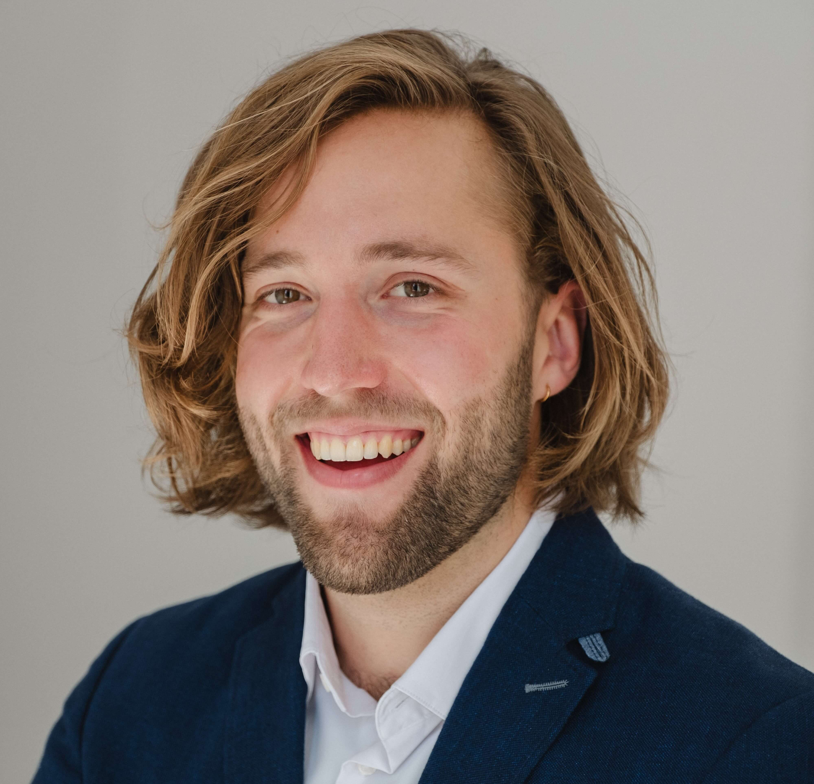

Hello! I'm Jan Kamm.
This page provides a brief overview of my background, professional experience, and plans for my next professional chapter in Zurich.
Profile at a Glance
- Analytical problem-solver: Physics M.Sc. with a strong quantitative and mathematical foundation
- Skilled communicator: State-certified mediator trained in clear, persuasive, and empathetic communication
- Client-facing consultant: Experience managing stakeholder expectations and client relationships at KPMG
- Structured project executor: Delivered large-scale solar farm development projects at Verbund
- Entrepreneurial initiative: Founded and operate a beach volleyball community as a side business
Professional Background
After completing my studies, I began my professional career as an ESG consultant at KPMG Germany. Our team supported banks in adapting traditional risk models to incorporate emerging climate and environmental risks. The learning curve was steep, and over the course of two years I gained substantial confidence working with senior clients.
Consulting often meant demanding timelines and complex projects. This environment taught me to remain calm under pressure and to manage expectations carefully. When a presentation required more preparation time than initially planned, it was important to communicate the reasons clearly and ensure that clients remained well supported.
Over time, I developed a desire to see the impact of my work more directly. I therefore transitioned into a project development and management role in the renewable energy sector at Verbund, Austria's largest electricity producer.
At Verbund I worked on large-scale solar projects and particularly valued the variety of tasks involved: coordinating multidisciplinary teams, staying up to date on legislative and technical developments, and engaging regularly with stakeholders. The role significantly strengthened my ability to structure projects and manage priorities. I also learned to move away from a slightly perfectionistic mindset and instead focus on what matters most in complex projects: prioritizing effectively.
Outside my formal roles, I founded and grew a beach volleyball community from a small group of around 20 people into a network of more than 1,000 participants. The project provided valuable practical experience in organization, entrepreneurship, and business administration.
The Next Chapter: Zurich
Originally from Munich, I have always felt a strong connection to the Alpine region. My years in Berlin have been a wonderful experience that I am very grateful for, but I increasingly feel drawn back toward the mountains and closer to nature. Through visits to Switzerland and close friends living in Zurich, I have come to appreciate the region greatly.
I am therefore looking to begin my next professional chapter in Zurich or the surrounding area. Having spent five childhood years in New Zealand and having traveled extensively across different continents, I am comfortable adapting to new environments and cultures.
At the moment I am taking a short break traveling through Latin America and working on converting my van into a camper van. This gives me flexibility regarding the start date of my next role, although ideally I would begin between 01.06.2026 and 01.07.2026. I will return home from my travels on 19.03.2026 and will be available for in-person interviews from that time onward.
If you believe my background could be a good fit for your team, I would be very happy to hear from you.
Contact
A detailed overview of my experience and qualifications can be found in my CV.